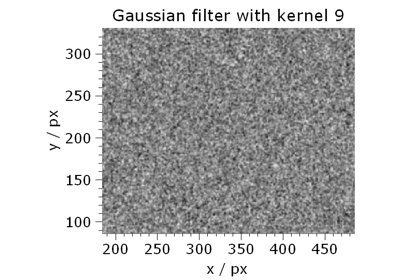
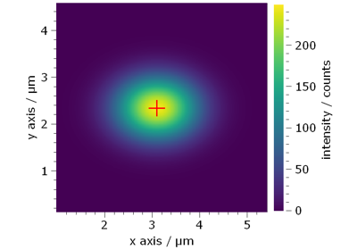

12.1.10.1. Basics#  Cameras and images Cameras and images DataObject DataObject  Gaussian spot centroid detection Gaussian spot centroid detection Load and save dataObject Load and save dataObject Convert falseColor Convert falseColor Measurement Measurement Timer Timer